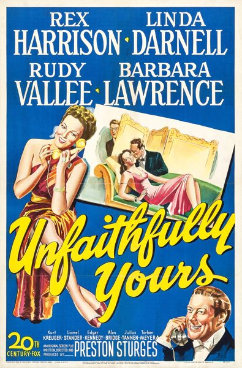

Unfaithfully Yours
Starring: Rex Harrison, Linda Darnell, Rudy Vallée
Director: Preston Sturges
Writer: Preston Sturges
Producer: Preston Sturges
Unfaithfully Yours is a 1948 American screwball black comedy film produced, written, and directed by Preston Sturges, and starring Rex Harrison, Linda Darnell, Rudy Vallée, and Barbara Lawrence.
Trivia
- Preston Sturges wrote the original screen story for Unfaithfully Yours in 1932—the idea came to him when a melancholy song on the radio influenced him while working on writing a comic scene.
- Sturges shopped the script to Fox, Universal and Paramount who all rejected it during the 1930s.
- In 1938, Sturges envisioned Ronald Colman playing de Carter, and later initially wanted Frances Ramsden—who was introduced in Sturges' 1947 film The Sin of Harold Diddlebock—to play Daphne; but by the time casting for the film began, he wanted James Mason for the conductor and Gene Tierney for his wife.
Previous Showings
11 Runs • 5 Festivals
10,272 tickets sold
All runs on record (11):
- March 8, 1988 · 0 ticketsw/ The Lady Eve
- October 26 - 31, 1991 · 1,495 ticketsw/ Sullivan's Travels
- April 23 - 26, 1994 · 2,029 ticketsw/ To Be or Not to Be
- December 13 - 15, 1996 · 958 ticketsw/ Adam's Rib
- January 7 - 9, 2000 · 525 ticketswinter2kw/ Anna and the King of Siam
- April 7 - 9, 2002Fall Folliesw/ A Night at the Opera
- November 6 - 8, 2002 · 918 ticketsw/ A Night at the Opera
- March 11 - 13, 2005 · 1,587 ticketsw/ A Night at the Opera
- December 6 - 7, 2006 · 330 tickets20th Century-Fox 2006w/ Molly and Me
- April 17 - 20, 2010 · 1,270 ticketsSpring 2010w/ The Palm Beach Story
- July 6 - 9, 2013 · 1,160 ticketsSummer 2013w/ To Be or Not to Be